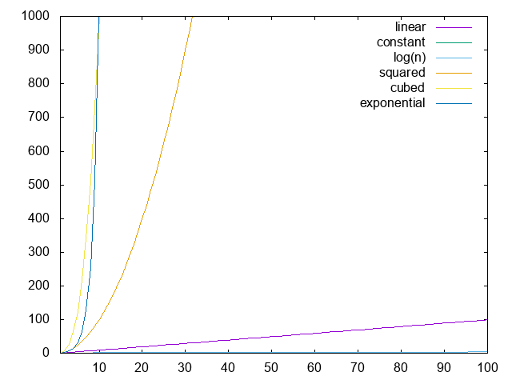

Complexity Notation
Algorithms are designed to solve problems. Over time, new algorithms are created to solve problems that old algorithms have already solved. In some cases, the new algorithms are not intrinsically better than the older ones. In other cases, these new algorithms breathe life into areas of research and engineering that could not exist without them. The question is: what makes an algorithm "better" than another one?
Obviously, there is no good answer to this question. If you write an algorithm to solve a problem, whatever you come up with will probably work just fine for small problems. That said, if you need to use the algorithm for a larger system, you might find yourself waiting for longer and longer on your code to run. In these cases, it's obvious that if you are working on a large system, you need an algorithm that scales well with a large size. Ideally, an algorithm that works well for a large system will also work with a smaller one; however, this is not always the case.
In order to determine the best algorithm for your system, it's often best to consult a tool computer scientists use to describe how algorithms scale with system size: complexity theory. Here's the idea: algorithms operate on data. Complexity theory uses different notations to describe how many operations an algorithm will need. In this way, computational complexity measures runtime in terms of the number of operations an algorithm takes to complete its task. To be clear, the notations used are not at all exact, but they roughly describe the run-time of code and can be used to estimate how long an algorithm should take to run. In addition, there are many different notations depending on who you ask, but for now we'll focus on the big 3: \( O \), \( \Omega \), and \( \Theta \). Big \( O \) assumes the worst, which is the often the most useful description of an algorithm. On the other hand, \( \Omega \) assumes the best and \( \Theta \) is used when the best and worst cases are the same.
Of the three Big \( O \) is used the most, and is used in conversation to mean that the algorithm will take "on the order of" \( n \) operations. Unfortunately, at this point, these notations might be a little vague. In fact, it was incredibly vague for me for a long time, and it wasn't until I saw the notations in action that it all started to make sense, so that's what this section is about: providing concrete examples to better understand computational complexity notation.
Constant Time
Let's write some code that reads in an array of length n and runs with constant time:
function constant(a::Array{Float64})
println(a[1])
end
Obviously, no matter how large a is, this function will not take any longer to run.
Because of this, we say it has a constant runtime and notate it with \( O(1) = \Omega(1) = \Theta(1) \).
Basically, we are saying that this function will run with 1 operation total (a single print).
The best-case runtime will be 1 operation, the worst-case runtime will be 1 operation, and because they are both the same, we can use \( \Theta \) to notate that.
Now imagine the following function:
function constant(a::Array{Float64})
if (length(a) >= 3)
println(a[1])
println(a[2])
println(a[3])
end
end
This function has 3 print statements, so it has 3 operations total. Because of this, it's tempting to say that the runtime would be \( O(3) = \Omega(3) = \Theta(3) \), and you would not be wrong; however, complexity notations often make a big assumption: we don't care about constants! What does this mean? Well, it means that we get rid of all constants that are not 1! In this case, that means we set \( O(3) = O(1) \).
Now, I know what you are thinking, That's stupid! It's clear that the second function will take 3 times as long to run, shouldn't we notate that? You're not wrong; however, complexity notation is mostly interested in how algorithms scale with larger and larger inputs. Because we are talking about constant run-time, there is no scaling with larger inputs. No matter what array you read in to the above functions, they will always take a constant number of operations to finish. Whether that constant time is 1 operation or 3 operations doesn't really matter because different machines will have different runtimes anyway.
Now, here's the thing: as we move on to more complicated examples, we will continue to ignore constants and extra terms to make the notation easier to understand. Just because this is common practice does not mean it's the best practice. I have run into several situation where knowing the constants has saved me hours of run-time, so keep in mind that all of these notations are somewhat vague and dependent on a number of auxiliary factors. Still, that doesn't mean the notation is completely useless. For now, let's keep moving forward with some more complicated (and useful) examples!
Linear Time
Now we are moving into interesting territory! Let's consider the following function:
function linear(a::Array{Float64})
for i = 1:length(a)
println(a[i])
end
end
Here, it's clear that if we increase a by one element, we will need to do another operation.
That is, with an array of size \( n \), we will need to do \( n \) operations, which means that our complexity is \( O(n) = \Omega(n) = \Theta(n) \).
As before, adding more operations into the for loop will change the constant in front of \( n \) in our complexity notation, but we'll continue to ignore those constants.
For example:
function linear(a::Array{Float64})
println("The first element in our array is: ", a[1])
println("The sum of all pairs of elements in our array are...")
for i = 1:length(a)/2
println("a is: ", a[2*i])
println("b is: ", a[2*i+1])
println("The sum of a and b is: ", a[2*i] + a[2*i+1])
end
println("The last element in our array is: ", a[end])
end
Technically has a complexity of \( \Theta(\frac{3n}{2} + 2) \), but we'll just call it \( \Theta(n) \).
Regardless of the notation, if you see something that is \( O(n) \), you know that at worst it will run at the speed of a for loop, which is pretty good!
Polynomial Time
A promise of \( O(n) \) is not bad in terms of run-time; however, it is unlikely that you will run into too many straightforward algorithms that are \( O(n) \). For example, let's say you have a square, 2D image and want to iterate through all of its points. Well, to do this, we might write code that looks something like:
# Here, size is the length of a single side of the image
function access_image(img::Array{Float64}, size::Int64)
for i = 1:size
for j = 1:size
index = j + i*size
println(img[index])
end
end
end
This is a simple case where a nested for loop is perfectly acceptable, and it's obvious geometrically that we need to access \( \mathrm{size}\times\mathrm{size} \) number of elements (because we are working with a square).
This means that this example has \( \Theta(n^2) \) complexity. This is not great.
If you have to access 3D space, this might require \( \Theta(n^3) \), which is even worse! Don't even get me started on 4D!
Intuitively, if you see anything that has a polynomial runtime, it's easy to think of it as a bunch of nested for loops.
That said, there have been several cases throughout the history of algorithms where polynomial runtimes have inhibited certain algorithms from being used entirely, simply because it takes too long to run!
For this reason, if you can avoid writing nested for loops, you certainly should!
However, there are several cases where this cannot be avoided, so don't spend too much time worrying about it unless runtime becomes an issue!
Exponential and Logarithmic Time
These are two more cases that come up all the time and often require a common theme: recursion. Generally speaking, logarithmic algorithms are some of the fastest algorithms out there, while exponential algorithms are some of the slowest. Unfortunately, this means that recursion can be either the most useful tool in existence for realizing certain algorithms or the most harmful one, depending on your problem.
Here is a simple example of a function with exponential runtime:
# Here, n is the number of iterations
function exponential(value::Int64, n::Int64)
println(value)
value += 1
exponential(value, n-1)
exponential(value, n-1)
end
Here, we read in the maximum number n we are iterating through and recursively call the exponential function, decrementing the number of iterations left each time.
Because we are calling the exponential function twice, this has a complexity of \( \Theta(2^n) \), which is not great, but if it's the only way to get a job done, it's the only way to get a job done.
Logarithmic algorithms can be thought of as the opposite of exponential ones. Instead of taking a value and computing more and more values each time, a good example of a logarithmic algorithm is one that takes an array and recursively divides it up, like so:
# Here, cutoff is an arbitrary variable to know when to stop recursing
function logarithmic(a::Array{Float64}, cutoff::Int64)
if (length(a) > cutoff)
logarithmic(a[1:length(a)/2], cutoff)
logarithmic(a[length(a)/2+1:end], cutoff)
end
println(length(a))
end
To be honest, it is not obvious that the provided logarithmic function should operate in \( \Theta(\log(n)) \) time, where \( n \) is the size of a.
That said, I encourage you to think about an array of size 8.
First, we split it in half, creating 2 arrays of 4 elements each.
If we split these new arrays, we have 4 arrays of 2, and if we split these by two we have 8 arrays of 1 element each.
This is as far as we can go, and we ended up dividing the array 3 times to get to this point.
\( 3 = \log_2(8) \), so this function runs with a logarithmic number of operations.
Putting it all together
We've outlined the most common complexity cases of different algorithms here, but at this point things might still be unclear. Which is better: \( O(n^2) \) or \( O(log(n)) \)? Well, let's plot all the different cases out, and the answer should become obvious.

Here, we see each of the complexity cases as \( n \) increases. Clearly, linear time is not bad when compared to polynomial or exponential time; however, if you can manage something in logarithmic or constant time, do it!
Now, there is a lot more to say about computational complexity and we'll definitely cover it at some point, but I can only move so fast! In particular, I would love to have a discussion on the \( P=NP \) issue that has been rustling the jimmies of a few computer scientists for a while, but we'll get to that in due time.
Final Warning
This is a book about algorithms. It would be nearly impossible to talk about most algorithms without touching on complexity theory and explaining why certain algorithms are faster than others. That said, just because an algorithm runs in \( O(\log n) \) does not mean it will always be faster than one that runs in \( O(n^2) \). Because complexity notation often ignores constants, there could be a crazy constant that we are missing that actually makes a huge difference in runtime. In addition, in order to use an algorithm that seems faster based on complexity notation, you may need to use a library that massively increases runtime due to a plethora of other reasons.
Basically, take complexity notation with a grain of salt. It is a useful descriptor of how fast algorithms should run in an ideal world; however, ideal worlds do not exist. When it comes to programming, there may be hundreds of other factors that need to be considered before implementing anything. That said, complexity notation should not be ignored. If you can easily implement an algorithm that is notationally faster with no repercussions, go for it! Just be sure you do not waste time trying to optimize code you haven't written yet.
In general, my advice would be the following: write code first and optimize what you can on the first run-through without going too far out of your way. If the runtime is awful, go back and see about implementing algorithms that are faster based on complexity notation.
License
Code Examples
The code examples are licensed under the MIT license (found in LICENSE.md).
Text
The text of this chapter was written by James Schloss and is licensed under the Creative Commons Attribution-ShareAlike 4.0 International License.

Images/Graphics
- The image "Complexity Scaling" was created by James Schloss and is licensed under the Creative Commons Attribution-ShareAlike 4.0 International License.
{kind=link}
Pull Requests
After initial licensing (#560), the following pull requests have modified the text or graphics of this chapter:
- none